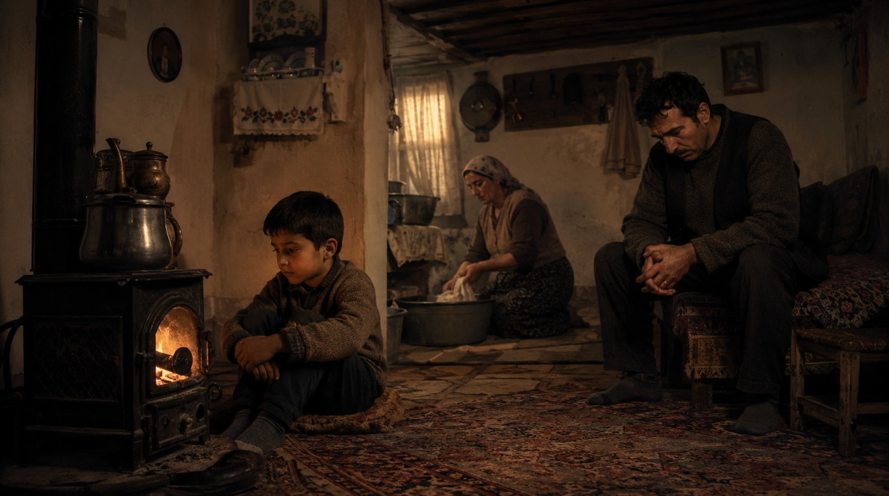
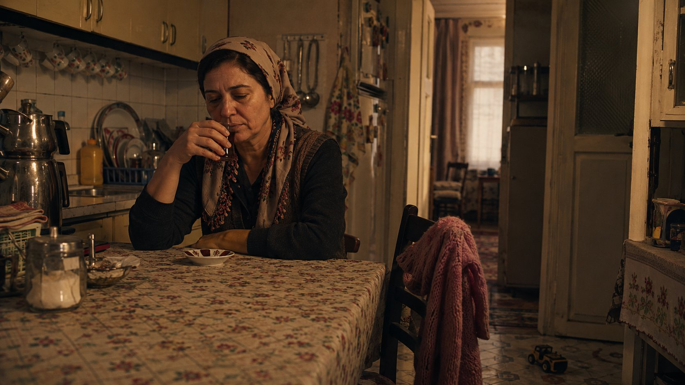
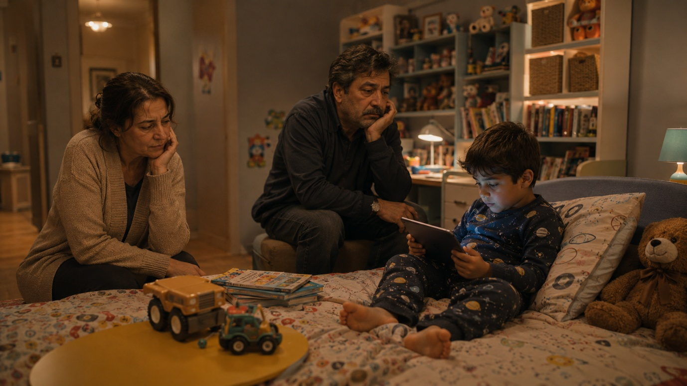

Bu yazıyı görünce açıkçası içim sıkıştı. Çünkü anne babalarımıza haksızlık edildiğini düşündüm.
Evet, insan kendi çocuğunu büyütürken geçmişine daha dikkatli bakıyor. Kendi çocukluğundaki eksikleri, suskunlukları, görülmeyen tarafları daha net fark ediyor. Bu çok anlaşılır. Ama "bizim jenerasyondaki ebeveynler bizimle asla ilgilenmedi, bizi büyütmedi" demek bana fazla ağır geliyor.
Çünkü insanı, aileyi, anneliği ve babalığı kendi zamanının içinde değerlendirmek gerekir.
Asıl sormamız gereken soru şu:
Onlar ne gördü?
O anneler, o babalar nasıl bir çocukluk yaşadı? Onlar ne annelik gördü, ne babalık gördü? Kendi çocuklarında ne aldılar ki bize ne verebildiler? Bizi nasıl büyütmeyi hayal ettiler?
Belki onların çocukluğunda "seni duyuyorum" diyen biri yoktu. Belki çocuk olmak; büyüklerin yanında susmak, erken yaşta sorumluluk almak, duygusunu içine atmak demekti. Kendi babalarından aldıkları şey sevgi değil sessizlikti. Kendi anneleri de sevgisini sarılarak değil, sobayı yakarak, yemeği yetiştirerek gösterdi.
Böyle bir çocukluktan gelen insanların bugünün bilinçli ebeveynlik ölçüleriyle davranmasını beklemek tarihsel bir körlük olur.
Muhtemelen onların hayali şuydu: "Ben çocuğumu doyurayım. Giydireyim. Okutayım. Aç kalmasın, üşümesin, kimseye muhtaç olmasın."
Bugün bize eksik gelen şey, onların gözünde başarıydı. Çünkü belki onlar büyütülmemiş, sadece hayatta tutulmuştu.

"Anneler çay içmiş, babalar TV izlemiş" cümlesi de bana ağır geliyor.
O çayı içen anne belki sabahtan akşama kadar evi çevirmişti. Yemek yapmış, çamaşır yıkamış, çocuk bakmış, akraba ilişkilerini taşımış, kendi yorgunluğunu bile anlatamamıştı. O çay, keyiften değil, hayatta kalmak için küçük bir nefes aralığıydı.
O televizyon izleyen baba da sevgisini konuşarak gösteremiyordu. Çünkü ona da kimse duygusunu anlatmayı öğretmemişti. İşe gitmek, eve ekmek getirmek, susmak ve yorulmak onun bildiği babalıktı.

Peki biz gerçekten daha iyiyiz?
Bunu henüz bilmiyoruz.
Bugün çocuk gelişimi biliyoruz, travma biliyoruz, bağlanma teorisi biliyoruz. Ama bunları biz icat etmedik. Bize sunuldu. Bu bizim üstünlüğümüz değil, tarihin bize verdiği bir şans.
Üstelik APA ve UNICEF'in son yıllardaki raporları şunu gösteriyor: Duygusal olarak daha fazla desteklenen Z kuşağı çocukları, eş zamanlı olarak tarihin en kaygılı, en kırılgan ve en yüksek ruh sağlığı sorunu yaşayan kuşağı olmaya aday. Daha çok dinlendiler, evet. Ama daha az dayanıklılar, daha az belirsizliğe toleranslılar. Bilinçli ebeveynliğin henüz göremediğimiz bir bedeli olabilir.
Yani şu an 10 yaşındaki çocuklar büyüdüğünde bize ne diyecek? "Bizi ekran başında büyüttünüz" mü? "Her şeyimizi sordunuz ama hiçbir şeye sınır koymadınız" mı? Bilmiyoruz. Çünkü ebeveynliğin sonucu, çocuk büyüdükten çok sonra ortaya çıkar. Elimizde hâlâ tamamlanmamış bir tablo var.

Bu yüzden mesele "onlar kötüydü, biz iyiyiz" kadar basit değil.
Çoğumuzun sofrasında emek vardı. Evinde düzen vardı. Arkasında sessiz bir fedakârlık vardı. Belki "seni seviyorum" denmedi ama okul çantası hazırlandı, ayakkabı alındı, soba yakıldı, yemek kondu.
Bunların hiçbiri kusursuzluk değildir. Ama hiçlik de değildir.
Her dönemin kendi doğruları, kendi eksikleri, kendi kör noktaları vardır. Bir dönemin insanını başka bir dönemin bilgisiyle yargılamak, tarihe de insana da haksızlık olur.
Belki bize veremedikleri şeylerin çoğunu kendileri de hiç almamıştı.
Bizim görevimiz onları mahkûm etmek değil, onlardan aldığımızı daha bilinçli bir yere taşımak. "Bana verilmedi, ben vereyim" diyebilmek kıymetli. Ama bunu yaparken "bana hiçbir şey verilmedi" demek haksızlık olabilir.
Çünkü mesele geçmişe öfkeyle bakmak değil.
Geçmişi anlayıp bugünü biraz daha iyi kurabilmek.